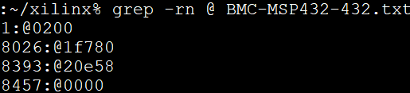
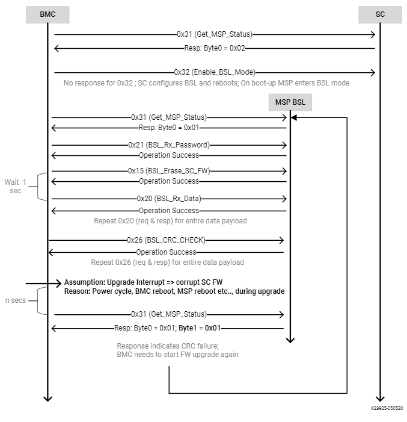

Satellite Controller Firmware Update Commands¶
In the Alveo™ U30 Hyperscaler only SKU, the satellite controller supports out-of-band method of SC FW upgrade in Xilinx® Alveo™ cards. The out-of-band SC FW update is supported at I2C address 0x65 (0xCA in 8-bit). Server BMC is expected to initiate the FW upgrade process by sending I2C commands to the SC FW. After the initial handshake with the SC FW, the server BMC will need to communicate with the MSP432 boot loader (BSL) to transfer the FW into MSP Flash and complete the upgrade process.
Note: Currently, the SC FW upgrades are always force upgrades, there is no version check currently in place. The old FW file will be overwritten by the new FW. Server BMC is expected to check and decide if the SC FW upgrade is needed. I2C speed of only 100 KHz is supported for all the commands mentioned in this chapter.
The following table lists the commands supported/needed for the FW upgrade.
Table: BMC to SC Commands
| Command Code | Command Name | Description |
|---|---|---|
| 0x04 | GET_SC_FW_VER | Get SC FW version (xx.yy.zz format) |
| 0x31 | GET_SC_STATUS | Returns status about what is running in MSP, FW, or BSL. |
| 0x32 | ENABLE_BSL_MODE | OoB command to reboot the SC and invoke BSL. |
Table: BMC to BSL Commands
| Command Code | Command Name | Description |
|---|---|---|
| 0x31 | GET_SC_STATUS | Returns status weather SC is in SC FW mode or BSL mode |
| 0x21 | BSL_RX_PASSWORD | Sends 56 bytes password to unlock the BSL |
| 0x15 | BSL_ERASE_SC_FW | BSL erases old SC FW |
| 0x20 | BSL_RX_DATA_BLOCK | Sends 32-bit data block to write (256 bytes max) |
| 0x26 | BSL_CRC_CHECK | Ask BSL to perform CRC check for validation |
| 0x27 | BSL_LOAD_PC | Jump to the SC’s application FW , after FW upgrade |
Table: SC flash write and read-back Commands
| Command Code | Command Name | Description |
|---|---|---|
| 0x34 | GET_SC_FLASH_WRITE_STATUS | SC sends the status for SC sector writes |
| 0x35 | GET_SC_WRITE_SECTOR_RANGE | SC sends the SC flash sector range for writes |
| 0x36 | SC_FLASH_WRITE_DATA_BLOCK | BMC sends payload for writes into SC sectors |
| 0x37 | SC_FLASH_READ_DATA_BLOCK | SC sends entire SC flash data to BMC |
0x31 - GET_SC_STATUS (SC firmware)¶
The GET_SC_STATUS command serves as the status command, revealing if the MSP432 processor is running in the application code (SC FW) or in BSL mode. Upon receiving this command, the SC FW responds with 0x02 in Byte 0.
Note: The same command is supported by BSL. BSL will respond saying ‘am in BSL mode’.
Table: GET_SC_STATUS Server BMC Request
| Server BMC Request | |
|---|---|
| Command code | 0x31 |
| Data bytes | N/A |
Table: GET_SC_STATUS Xilinx Alveo Card Response
| Xilinx Alveo Card Response | ||
|---|---|---|
| Data bytes | Byte 0 | 0x02 |
| Byte 1 | N/A | |
0x32 - ENABLE_BSL_MODE¶
Upon receiving the ENABLE_BSL_MODE command, the SC FW configures FW update mode in the BSL and reboots itself. The next boot up takes the control to BSL mode. Absence of this step results in normal reboots, where the application code/FW will boot-up instead of staying in BSL to enable the FW update process.
Note: For this command, the SC FW will not be able to respond to the BMC with success or failure before rebooting itself.
Table: ENABLE_BSL_MODE Server BMC Request
| Server BMC Request | |
|---|---|
| Command code | 0x32 |
| Data bytes | N/A |
Table: ENABLE_BSL_MODE Xilinx Alveo Card Response
| Xilinx Alveo Card Response | ||
|---|---|---|
| Data bytes | N/A | N/A |
BSL Communication¶
IMPORTANT! The following is a recommendation from TI. Refer to TI’s MSP432P4xx SimpleLink Microcontrollers Bootloader user guide (BSL)for more information.
The I2C protocol used by the BSL is defined as:
- The master must request data from the BSL slave.
- 7-bit addressing mode is used. By default, the slave listens to address 0x65 (0xCA 8-bit).
- In addition to the I2C protocol-based hardware ACK, handshake for commands is performed by an acknowledged character in the BSL core response format, as specified in the I2C BSL response table of MSP432P4xx SimpleLink Microcontrollers Bootloader (BSL).
- Repeated starts are not required by the BSL, but can be used.
- TI recommends waiting 1.2 ms after sending a command to the BSL and receiving the response. TI also recommends waiting 1.2 ms before sending the next command after a response was received.
- The I2C BSL interface supports a maximum clock speed of 400 kHz.
CRC Calculation
For the purposes of CRC calculation in the BSL, the MSP432 device performs a 16-bit CRC check using the CRC16-CCITT standard. This CRC signature is based on the polynomial given in the CRC16-CCITT with the following function:
f (x) = x16 + x12 + x5 + 1
CRC Checksum Low, CRC Checksum High
The checksum is computed on bytes in the BSL core command section only. The BSL uses CRC16-CCITT for the checksum and computes it using the MSP432 CRC module. CRC bytes (CKL, CKH) are mandatory for all commands. The ACK, header, and length bytes must be ignored.
Length Low Byte, Length High Byte
Length low byte, length high byte is the number of bytes in the BSL core data packet, broken into high and low bytes. The number of bytes must include only core data packets, as detailed below, and does not include the length bytes and checksum bytes.
- Command code
- All address bytes (if applicable)
- All data bytes (if applicable)
Note: All commands with prefix BSL_ are core commands supported by BSL. The request and response bytes are pre-defined by TI.
0x31 - GET_SC_STATUS (BSL)¶
The GET_SC_STATUS command serves as a status command telling whether the MSP432 processor is running the application code (SC FW) or in BSL mode. Upon receiving this command, BSL responds with 0x01 in byte 0 MSP BSL mode. Byte 1 serves as status byte.
Note: The same command is supported by the SC application FW, where the SC responds with SC FW mode.
Table: GET_SC_STATUS (BSL) Server BMC Request
| Server BMC Request | |
|---|---|
| Command code | 0x31 |
| Data bytes | N/A |
Table: GET_SC_STATUS (BSL) Xilinx Alveo Card Response
| Xilinx Alveo Card Response | ||
|---|---|---|
| Data bytes | Byte 0 | 0x01 |
| Byte 1 (status) | 0x00: BSL_OK 0x01: BSL_CRC_CHECK_FAIL 0x02: BSL_PARTIAL_FW_UPGRADE 0x03: BSL_FLASH_WRITE_ERROR |
|
0x21 - BSL_RX_PASSWORD¶
The BSL core receives the password contained in the packet and unlocks the BSL protected commands if the password matches the 56 bytes in the BSL. When an incorrect password is given, BSL responds with Password Error and subsequent commands sent to the BSL result in no-operation.
Note: Contact Xilinx® for the password information.
Table: BSL_RX_PASSWORD Server BMC Request
| Server BMC Request | |
|---|---|
| Header | 0x80 |
| Length (low byte) | 0x39 |
| Length (high byte) | 0x00 |
| Command code | 0x21 |
| Data bytes | D1…D56 D1-D56–Xilinx Password D57–D256–0xFF |
Table: BSL_RX_PASSWORD Xilinx Alveo Card (BSL) Response
| Xilinx Alveo Card (BSL) Response | ||
|---|---|---|
| Data bytes B0 … B7 | B0: ACK | 0x00 |
| B1: Header | 0x80 | |
| B2: Length | 0x02 | |
| B3: Length | 0x00 | |
| B4: CMD | 0x3B | |
| B5: Message | 0x00 – Operation successful 0x04– BSL locked. Password incorrect resulted in BSL locking 0x05– BSL password error. Incorrect password sent to unlock BSL 0x07– Unknown Command |
|
| B6: CKL | 0x60 | |
| B7: CKH | 0xC4 | |
Table: BSL_RX_PASSWORD BSL Command Response for a Successful Password
| ACK | Header | Length | Length | CMD | MSG | CKL | CKH |
|---|---|---|---|---|---|---|---|
| 0x00 | 0x80 | 0x02 | 0x00 | 0x3B | 0x00 | 0x60 | 0xC4 |
Table: BSL_RX_PASSWORD Command Example
| Header | Length | Length | CMD | D1 | D2 | D3 | D4 | D5 | D6 |
|---|---|---|---|---|---|---|---|---|---|
| 0x80 | 0x01 | 0x01 | 0x21 | 0xFF | 0xFF | 0xFF | 0xFF | 0xFF | 0xFF |
| D7 | /././. | D251 | D252 | D253 | D254 | D255 | D256 | CKL | CKH |
|---|---|---|---|---|---|---|---|---|---|
| 0xFF | 0xFF | 0xFF | 0xFF | 0xFF | 0xFF | 0xFF | 0xFF | 0xAD | 0x08 |
0x15 - BSL_ERASE_SC_FW¶
The BSL_ERASE_SC_FW command erases the entire SC FW code in the MSP432 MCU flash. Other flash sectors will not be erased. This function does not erase RAM.
Note: Allow at least 1 second for the erase operation to complete before proceeding with next set of commands.
Table: BSL_ERASE_SC_FW Server BMC Request
| Server BMC Request | |
|---|---|
| Header | 0x80 |
| Length (low byte) | 0x01 |
| Length (high byte) | 0x00 |
| Command code | 0x15 |
| CKL | TBD |
| CKH | TBD |
Table: BSL_ERASE_SC_FW Xilinx Alveo Card (BSL) Response
| Xilinx Alveo Card (BSL) Response | ||
|---|---|---|
| Data bytes B0 … B7 | B0: ACK | 0x00 |
| B1: Header | 0x80 | |
| B2: Length | 0x02 | |
| B3: Length | 0x00 | |
| B4: CMD | 0x3B | |
| B5: Message | 0x00 – Operation successful 0x04– BSL locked. Password incorrect resulted in BSL locking 0x05– BSL password error. Incorrect password sent to unlock BSL 0x07– Unknown Command |
|
| B6: CKL | 0x60 | |
| B7: CKH | 0xC4 | |
Command Example
Table: BSL_ERASE_SC_FW Initiate Erase
| Header | Length | Length | CMD | CKL | CKH |
|---|---|---|---|---|---|
| 0x80 | 0x01 | 0x00 | 0x15 | 0x64 | 0xA3 |
Table: BSL_ERASE_SC_FW BSL Response (Successful Operation)
| ACK | Header | Length | Length | CMD | MSG | CKL | CKH |
|---|---|---|---|---|---|---|---|
| 0x00 | 0x80 | 0x02 | 0x00 | 0x3B | 0x00 | 0x60 | 0xC4 |
0x20 - BSL_RX_DATA_BLOCK¶
The BSL core writes bytes data byte 1 (D1)–data byte n (Dn) starting from the location specified in the address fields. The BSL_RX_DATA_BLOCK command allows the BSL to address the device with the full 32-bit range.
Table: BSL_RX_DATA_BLOCK Server BMC Request
| Server BMC Request | |
|---|---|
| Header | 0x80 |
| Length (low byte) | 0x05 |
| Length (high byte) | 0x01 |
| Command code | 0x20 |
| Address bytes | A0, A1, A2, A3 |
| Data bytes | D1, D2 … D256 |
| CKL | TBD |
| CKH | TBD |
Table: BSL_RX_DATA_BLOCK Xilinx Alveo Card (BSL) Response
| Xilinx Alveo Card (BSL) Response | ||
|---|---|---|
| Data bytes B0 … B7 | B0: ACK | 0x00 |
| B1: Header | 0x80 | |
| B2: Length | 0x02 | |
| B3: Length | 0x00 | |
| B4: CMD | 0x3B | |
| B5: Message | 0x00 – Operation successful 0x04– BSL locked. Password incorrect resulted in BSL locking 0x05– BSL password error. Incorrect password sent to unlock BSL 0x07– Unknown Command |
|
| B6: CKL | 0x60 | |
| B7: CKH | 0xC4 | |
BSL_RX_DATA_BLOCK Command Example
Table: Write Data 0x76543210 to Address 0x0001:0000
| Header | Length | Length | CMD | A0 | A1 | A2 | A3 | D1 | D2 | D3 | D4 | CKL | CKH |
|---|---|---|---|---|---|---|---|---|---|---|---|---|---|
| 0x80 | 0x09 | 0x00 | 0x20 | 0x00 | 0x00 | 0x01 | 0x00 | 0x10 | 0x32 | 0x54 | 0x76 | 0x66 | 0x96 |
Table: BSL_RX_DATA_BLOCK BSL Response for a Successful Data Write
| ACK | Header | Length | Length | CMD | MSG | CKL | CKH |
|---|---|---|---|---|---|---|---|
| 0x00 | 0x80 | 0x02 | 0x00 | 0x3B | 0x00 | 0x60 | 0xC4 |
Note: The BMC will need to parse through the SC FW file to identify the start location for each segment. To be specific, search for ‘@’ and use the following 4-byte address to frame and send the address bytes: A0, A1, A2, and A3 (LSB first).
Figure: Linux grep Command
There are 4 segments in the following example:
- @200– Segment starting at (0x00000200 A0 = 0x00; A1 = 0x02; A2 = 0x00; A3 = 0x00)
- @1f780– Segment starting at 0x0001F780 (A0 = 0x80; A1 = 0xF7; A2 = 0x01; A3 = 0x00)
- @20e58– Segment starting at 0x00020E58 (A0 = 0x58; A1 = 0x0E; A2 = 0x02; A3 = 0x00)
- @0000– Segment starting at 0x00000000 (A0 = 0x00; A1 = 0x00; A2 = 0x00; A3 = 0x00)
This figure captures the linux grep command and response for the string ‘@’ within the FW file.
Note: The string ‘@’ represents the start of a new section in the flash memory.
Because the BSL_RX_DATA_BLOCK command’s maximum data size is 256 bytes, the address needs to be incremented by 256 or 0x100.
For the first packet in every segment, the BMC will send the 4-byte address as parsed above
0x80 0x09 0x00 0x20 0x00 0x02 0x00 0x00 0x00 0x01 .. 0xFF 0x66 0x96.
For all subsequent packets, the BMC will increment the address by 0x100 while sending the commands 0x80 0x09 0x00 0x20 0x00 0x03 0x00 0x00 0x00 0x01 .. 0xFF 0x66 0x96 Header-Length-CMD-Address-Data-Checksum.
0x26 - BSL_CRC_CHECK¶
Note: The BSL_CRC_CHECK command is an optional command.
The MSP432 device performs a 16-bit CRC check using the CCITT standard. The address given is the first byte of the CRC check; 2 bytes are used for the length.
Table: BSL_CRC_CHECK Server BMC Request
| Server BMC Request | |
|---|---|
| Header | 0x80 |
| Length (low Byte) | TBD |
| Length (high Byte) | 0x00 |
| Command code | 0x26 |
| Address bytes | A0, A1, A2, A3 |
| Data bytes | D1: length (low byte) D2: length (high byte) |
| CKL | TBD |
| CKH | TBD |
Table: BSL_CRC_CHECK Xilinx Alveo Card (BSL) Response
| Xilinx Alveo Card (BSL) Response | ||
|---|---|---|
| Data bytes B0 … B8 | B0: ACK | 0x00 |
| B1: Header | 0x80 | |
| B2: Length | 0x02 | |
| B3: Length | 0x00 | |
| B4: CMD | 0x3A | |
| B5: Data1 | TBD | |
| B6: Data2 | TBD | |
| B7: CKL | TBD | |
| B8: CKH | TBD | |
BSL_CRC_CHECK Command Example
Perform a CRC check from address 0x0000:4400 to 0x0000:47FF (size of 1024 bytes of data).
Table: BSL_CRC_CHECK Command Example
| Header | Length | Length | CMD | A0 | A1 | A2 | A3 | D1 | D2 | CKL | CKH |
|---|---|---|---|---|---|---|---|---|---|---|---|
| 0x80 | 0x07 | 0x00 | 0x26 | 0x00 | 0x44 | 0x00 | 0x00 | 0x00 | 0x04 | 0xF7 | 0xE6 |
The BSL response where 0x55 is the low byte of the calculated checksum and 0xAA is the high byte of the calculated checksum:
Table: BSL_CRC_CHECK Response for a Successful CRC Calculation
| ACK | Header | Length | Length | CMD | D1 | D2 | CKL | CKH |
|---|---|---|---|---|---|---|---|---|
| 0x00 | 0x80 | 0x03 | 0x00 | 0x3A | 0x55 | 0xAA | 0x12 | 0x2B |
Note: As noted in the BSL_RX_DATA_BLOCK command, BMC will need to parse through the SC FW file to identify the start address for each command.
0x27 - BSL_LOAD_PC¶
The BSL_LOAD_PC command causes the BSL to jump and begin execution at the given address. The BSL responds with 0x00. In this case, the jump address is 0x0000:0201.
Table: BSL_LOAD_PC Server BMC Request
| Server BMC Request | |
|---|---|
| Header | 0x80 |
| Length (low byte) | 0x05 |
| Length (high byte) | 0x00 |
| Command code | 0x27 |
| Address bytes | A0, A1, A2, A3 A0: 0x01 A1: 0x02 A2: 0x00 A3: 0x00 |
| CKL | TBD |
| CKH | TBD |
Table: BSL_LOAD_PC Xilinx Alveo Card Response
| Xilinx Alveo Card Response | ||
|---|---|---|
| Data bytes | Byte 0 | 0x00–Success |
Command Example
The program counter is set to 0x0000:0201. The server BMC must send the address bytes as A0=0x01, A1=0x02, A2=0x00, and A3=0x00.
| Header | Length | Length | CMD | A0 | A1 | A2 | A3 | CKL | CKH |
|---|---|---|---|---|---|---|---|---|---|
| 0x80 | 0x05 | 0x00 | 0x27 | 0x01 | 0x02 | 0x00 | 0x00 | 0x8E | 0xBC |
The BSL responds with 0x00.
Note: Functionality of the BSL core command has been modified to improve robustness around the SC FW upgrade process. When BMC issues this command to jump to SC application code, BSL checks the CRC of the entire SC FW image. If the CRC check is successful, BSL loads the new SC application code. If not, the MSP stays in BSL mode with the assumption that SC FW is corrupted/interrupted due to CRC failure.
Sample BSL Commands¶
The contents from the following table have been imported from TotalPhase Aardvark I2C adapter.
Figure: I2C Transaction captured using I2C Aardvark Tool

Timing Diagram: Normal Flow of OoB SC FW Upgrade¶
- The BMC sends the 0x31 GET_SC_STATUS command to the SC, which responds with 0x02 - MSP SC FW mode.
- The BMC sends the 0x32 Enable_BSL_Mode command to the SC which configures the BSL parameters and reboots itself. The MSP enters BSL mode on the next boot up. No response is sent to BMC.
- The BMC waits 1 second and sends the 0x31 GET_SC_STATUS command to BSL and gets response 0x01 from the BSL MSP in BSL mode.
- The BMC unlocks the BSL by sending the password (0x21 BSL_RX_PASSWORD) and the BSL sends the status in response.
- The BMC sends the 0x15 BSL_ERASE_SC_FW command to the BSL asking that the entire SC FW image to be erased. BSL erases the FW and sends the response back to BMC.
- The BMC sends the entire SC FW via repeated 0x20 BSL_RX_Data command with the correct start address and BSL sends the status in response.
- The BMC (optionally) sends the 0x26 BSL_CRC_CHECK command with the correct start address and the BSL sends the status in response.
- The BMC sends the 0x27 BSL_Load_PC command and the BSL checks the CRC on the full FW. If CRC passes, the new SC FW loads. If not, it stays in BSL mode, enabling the BMC to restart the SC FW upgrade (see step 3).
Figure: Timing Diagram: Normal flow of Out-of-Band SC FW Upgrade

Timing Diagram: Interrupted Flow of the OoB SC FW Upgrade¶
- If the SC FW upgrade is interrupted mid-way due to power cycle (i.e., BMC reboot, MSP reboot, etc.,) the BSL takes corrective action by prohibiting the partial/corrupt FW to boot.
- The BSL disables the SC FW application code and hangs in BSL, waiting for a new SC FW upgrade process by BMC.
- The BMC will need to re-trigger the upgrade process from the start. This is done by sending a 0x31 GET_SC_STATUS command to get the status and following Timing Diagram: Normal Flow of OoB SC FW Upgrade.
Note: It is possible the I2C engine in the BSL can get stuck if the transaction got interrupted (as mentioned in step 1). Because the BSL does not have I2C recovery mechanisms, the only way to get back to BSL mode is to reboot the MSP. This can be only done by the AC power cycle of the server.
Figure: Interrupted flow of OoB SC FW Upgrade
SC flash write and read-back Commands¶
0x34 - GET_SC_FLASH_WRITE_STATUS¶
BMC sends this command to get the status for the SC flash sector write operations.
Table: GET_SC_FLASH_WRITE_STATUS Server BMC Request
| Server BMC Request | |
|---|---|
| Command code | 0x34 |
| Byte0 | N/A |
Table: GET_SC_FLASH_WRITE_STATUS Xilinx Alveo Card Response
| Xilinx Alveo Card Response | ||
|---|---|---|
| Data bytes | B0 | 0x01 - Operation success (No error) 0x02 - Operation failed 0x03 - Operation in progress 0x04 - Invalid input parameters 0x05 - Device busy, recheck later 0x06 - Invalid CRC (for I2C transaction) 0x07 - Data sector overflow 0x08 - SC flash write error 0x09 - Unwritable sector |
0x35 - GET_SC_WRITE_SECTOR_RANGE¶
The BMC sends this command to get the valid SC flash sector range for the write operations. Based on the response code in Byte 0 and the sector range (B1 - B4), BMC can calculate the total number of bytes of writable data to be sent to SC flash. SC’s total flash size is 2 MB and there are 512 sectors (4 KB each) in total. BMC can write only in the writable sectors. Refer the table below for flash sector partition and valid writable sector range (156 - 511).
Note: BMC must send command 0x35 to get valid write sectors before sending the command 0x36 to transfer write data payload. Additionally, if BMC resends the command 0x35 in the middle of the write data payload transfer, SC will reset the entire write flow (i.e.) the start & end sectors. Optionally, BMC can also send the command 0x35 to reset the flow, in case it is needed.
Table: SC flash sector partition information
| SC flash sector range | Usage | Writable to BMC |
|---|---|---|
| 0 - 127 | SC firmware | NO |
| 128 - 129 | Run-time config data | NO |
| 130 - 147 | BSL (Boot-loader) firmware | NO |
| 148 - 155 | Run-time config data & logs | NO |
| 156 - 511 | Unused | YES |
Table: GET_SC_WRITE_SECTOR_RANGE Server BMC Request
| Server BMC Request | |
|---|---|
| Command code | 0x35 |
| Byte0 | N/A |
Table: GET_SC_WRITE_SECTOR_RANGE Xilinx Alveo Card Response
| Xilinx Alveo Card Response | ||
|---|---|---|
| Data bytes | B0 | 0x01 - Operation success (No error) 0x02 - Operation failed 0x03 - Unwritable sector range |
| B1 | Start sector number (low byte) | |
| B2 | Start sector number (high byte) | |
| B3 | End sector number (low byte) | |
| B4 | End sector number (high byte) | |
0x36 - SC_FLASH_WRITE_DATA_BLOCK¶
BMC sends this command iteratively to send payload to write into SC flash sectors. Upon receiving the write payload, SC automatically starts writing the data from the 1st available writable flash sector as informed via command 0x35. Each transaction is limited to 251 bytes to accommodate 2 bytes of CRC. BMC must use the CRC16-CCITT signature based on the polynomial function below: f (x) = x16 + x12 + x5 + 1
In case of CRC mismatch (return code 0x05), BMC must resend the transaction. And it is BMC’s responsibility to keep track of the total number of bytes written/sent. After the completion of each transaction, BMC must check the write status via command 0x34 and proceed to next transaction only if SC returns 0x01 as response. SC performs the flash write operation in the background and will not be able to handle parallel/multiple transactions.
Note: BMC must send command 0x35 to set valid write sectors before sending the command 0x36 to send write data. Additionally, if BMC resends the command 0x35 in the middle of the write data payload transfer, SC will reset the entire write flow (i.e.) the start & end sectors. Optionally, BMC can also send the command 0x35 to reset the flow, in case it is needed.
Table: SC_FLASH_WRITE_DATA_BLOCK Server BMC Request
| Server BMC Request | |
|---|---|
| Command code | 0x36 |
| Data Bytes | D1, D2, … D251 |
| CKL | CRC Low byte |
| CKH | CRC High byte |
Table: SC_FLASH_WRITE_DATA_BLOCK Xilinx Alveo Card Response
| Xilinx Alveo Card Response | ||
|---|---|---|
| Data bytes | B0 | 0x01 - Operation success (No error) 0x02 - Operation failed 0x03 - Invalid CRC (for I2C transaction) 0x04 - Send command 0x35 first and retry 0x36 |
0x37 - SC_FLASH_READ_DATA_BLOCK¶
BMC sends this command iteratively to read the data from entire SC flash. Each transaction is limited to 251 bytes to accommodate 2 bytes of CRC. BMC must use the CRC16-CCITT signature based on the polynomial function below: f (x) = x16 + x12 + x5 + 1
At the end of each transaction, BMC must perform CRC check and then only proceed to read the next sector. In case of CRC mismatch, BMC must ask SC to resend the previous transaction. For the last transaction, SC may send a payload less than 251 bytes and it is BMC’s responsibility to keep track of the total number of bytes read.
Table: SC_FLASH_READ_DATA_BLOCK Server BMC Request
| Server BMC Request | |
|---|---|
| Command code | 0x37 |
| Byte0 | 0x00: Resend previous transaction 0x01: Send next transaction |
Table: SC_FLASH_READ_DATA_BLOCK Xilinx Alveo Card Response
| Xilinx Alveo Card Response | |
|---|---|
| Data Bytes | D1, D2, … D251 |
| CKL | CRC Low byte |
| CKH | CRC High byte |
Xilinx Support
For support resources such as answers, documentation, downloads, and forums, see the Alveo Accelerator Cards Xilinx Community Forum.
License
Licensed under the Apache License, Version 2.0 (the “License”); you may not use this file except in compliance with the License.
You may obtain a copy of the License at http://www.apache.org/licenses/LICENSE-2.0
All images and documentation, including all debug and support documentation, are licensed under the Creative Commons (CC) Attribution 4.0 International License (the “CC-BY-4.0 License”); you may not use this file except in compliance with the CC-BY-4.0 License.
You may obtain a copy of the CC-BY-4.0 License at https://creativecommons.org/licenses/by/4.0/
Unless required by applicable law or agreed to in writing, software distributed under the License is distributed on an “AS IS” BASIS, WITHOUT WARRANTIES OR CONDITIONS OF ANY KIND, either express or implied. See the License for the specific language governing permissions and limitations under the License.
XD038 | © Copyright 2021 Xilinx, Inc.